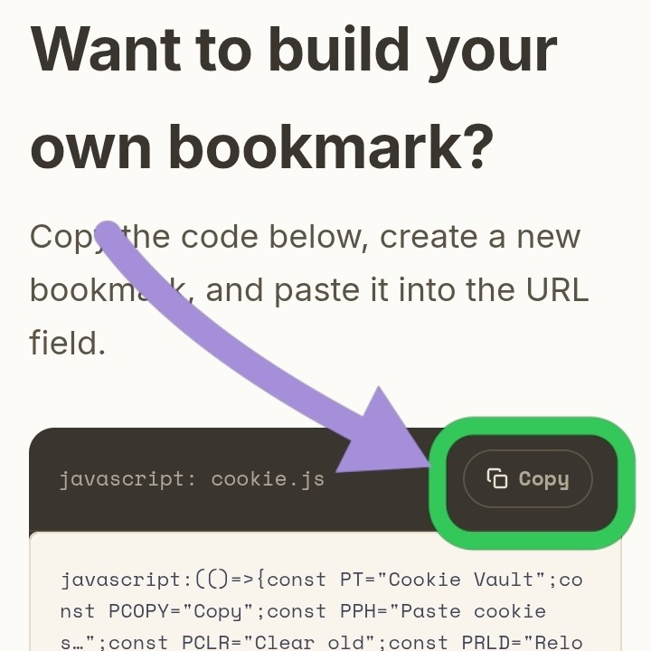
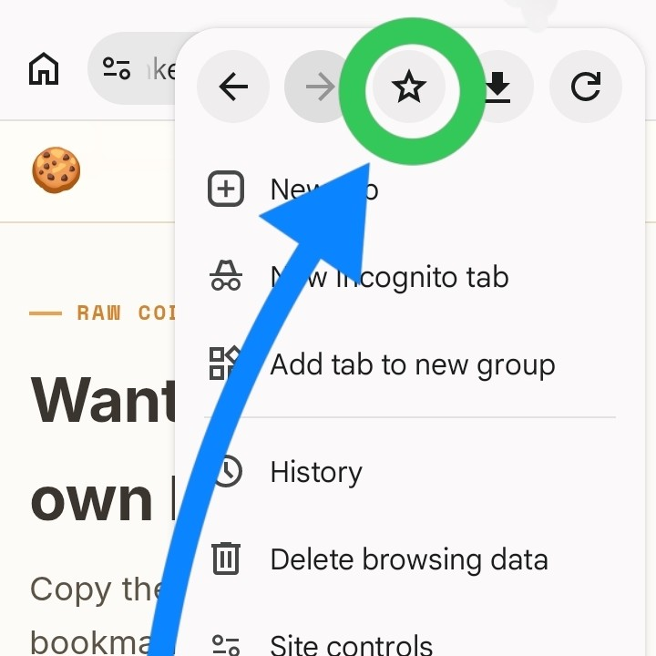
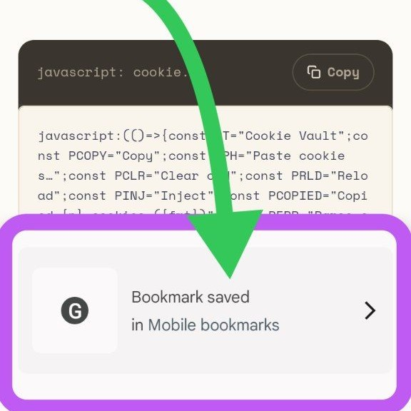
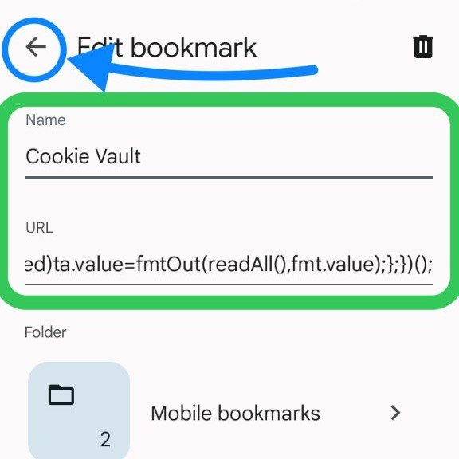
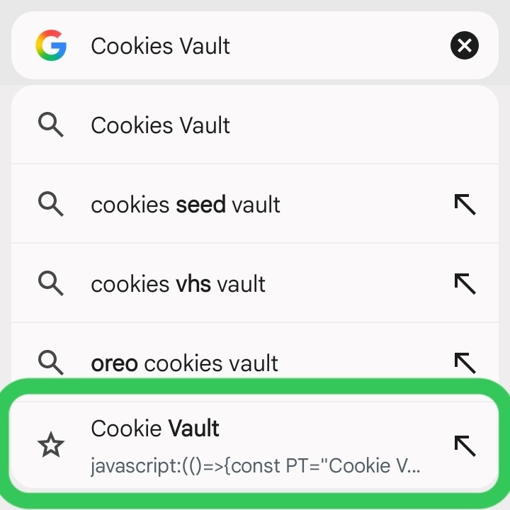

BOOKMARKLET · 4742 CHARACTERS · NO INSTALL
Manage cookies on any site in one click
Cookie Vault is a bookmarklet — copy, paste, or inject cookies on any page without installing an extension. Paste JSON, a Header String, or Netscape format and it figures out the rest.
🍪 Drag Cookie Vault
Drag the button above to your bookmarks bar
How it works
Three steps to get started
Bookmarks bar not visible? Press Ctrl+Shift+B (Windows/Linux) or ⌘+Shift+B (Mac).
01
Drag it to your bookmarks bar
Grab the
🍪 Cookie Vault button above and drop it on your bookmarks bar. It's a saved bookmarklet — no extension gets installed.02
Click it on any site
Go to the website whose cookies you want to work with, then click
Cookie Vault in your bookmarks bar. A light panel opens and the page behind it blurs.03
Copy or inject
To copy current cookies, pick a format and press
Copy. To set new cookies, paste them into the textbox and press Inject — the format is auto-detected.01
Copy the raw code
Scroll down to
Raw code near the bottom of this page and press Copy.
02
Bookmark this page
Open your browser's menu (⋮) and tap the ★ star icon to save this page as a bookmark.

03
Confirm it saved
A
Bookmark saved notice appears at the bottom — tap it (or open Bookmarks from the menu) to get back to it.
04
Edit the bookmark
Open the saved bookmark's edit screen, keep the
Name as it is, then clear the URL field and paste the code you copied in step 1.
05
Run it from the address bar
On any site, type the bookmark's name into the address bar — it shows up as a suggestion. Tap it and the panel opens.

Supported formats
Paste it, and it just knows
Paste any one of these three formats and Cookie Vault parses and injects it correctly on its own — no need to pick a format manually.
JSON
Cookie-Editor export
The default export format from the Cookie-Editor extension.
HEADER STRING
document.cookie
The format you get straight from
document.cookie in browser DevTools.
NETSCAPE
cookies.txt
A file exported from curl, wget, or a cookies.txt extension.
Inside the panel
Small panel, full control
01
Preview updates as you switch format
Pick JSON / Header / Netscape from the dropdown and the textbox preview instantly switches to that format.
02
Clear old — wipe before injecting
Enabled by default, this option clears all current cookies before injecting so old and new cookies don't mix.
03
Reload — auto-refresh after inject
The page reloads itself right after injecting so the new cookies take effect immediately.
04
Close it from anywhere
Click outside the panel or press ✕ to close it. Clicking the bookmarklet again also toggles it closed.
Test files
Sample cookies to try it with
Each card below is one cookie file. Copy sends its content straight to your clipboard — the arrow opens that folder's test site in a new tab.
Raw code
Want to build your own bookmark?
Copy the code below, create a new bookmark, and paste it into the URL field.
javascript: cookies.js